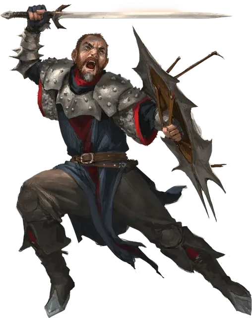

Солдат Драконьей армии
Dragon Army Soldier
Средний Гуманоид, законно-злой

Класс Доспеха 17 (чешуйчатый доспех, щит)
Хиты 22 (4к8 + 4)
Скорость 30 футов
| мод | спас | ||
|---|---|---|---|
| СИЛ | 15 | +2 | +2 |
| ЛОВ | 12 | +1 | +1 |
| ТЕЛ | 12 | +1 | +1 |
| мод | спас | ||
|---|---|---|---|
| ИНТ | 10 | +0 | +0 |
| МДР | 10 | +0 | +0 |
| ХАР | 10 | +0 | +0 |
Навыки Атлетика +4, Восприятие +2
Чувства пассивное Восприятие 12
Языки Общий, Драконий
Опасность 1 (200 опыта)
Бонус мастерства +2
Особенности
Драконья преданность. Пока солдат может видеть невраждебного ему Дракона, он совершает с преимуществом броски атаки.
Действия
Мультиатака. Солдат совершает две атаки Длинным мечом или Метательным копьём.
Длинный меч. . Рукопашная атака оружием: +4 к попаданию, досягаемость 5 фт., одна цель. Попадание: 6 (1к8 + 2) рубящего урона или 7 (1к10 + 2) рубящего урона, если используется двумя руками, плюс 2 (1к4) урона огнём.
Метательное копьё. . Рукопашная или дальнобойная атака оружием: +4 к попаданию, досягаемость 5 фт. или дистанция 30/120 фт., одна цель. Попадание: 5 (1к6 + 2) колющего урона плюс 2 (1к4) урона огнём.
Описание
Драконьи армии привлекают в свои ряды фанатичных последователей. Новобранцам прививают почитание Королевы драконов и драконов, в качестве её любимыми слуг. Войска Драконьей армии используют оружие, несущее благословение Такхизис и наделённой силой драконов, с которыми они сражаются на одной стороне.
Оружие армии драконов
Оружие солдат Драконьей армии благословлено и закалено драконьим дыханием. Вид урона, причиняемого этим оружием, зависит от конкретной армии. В приведённых здесь блоках статистики представлены солдаты Красной Драконьей Армии с оружием, закалённым огнём красных драконов. Вы можете использовать последователей других цветных драконов, изменив урон от огня в соответствии с видом урона, который причиняет дыхание этих драконов.